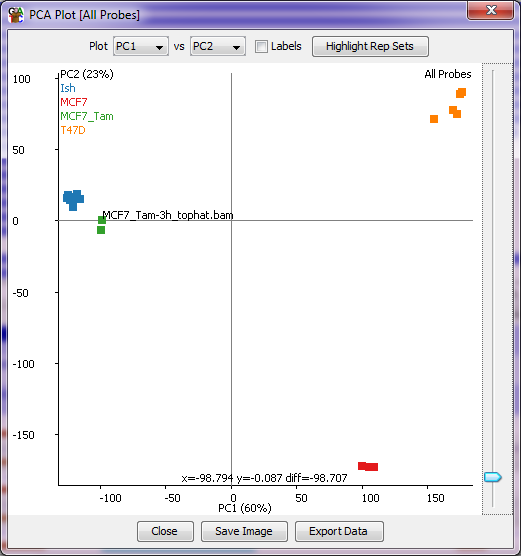
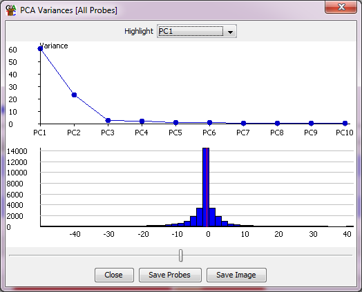

The PCA plot is a simple graphical way to look at the overall relatedness of a number of data stores. It picks out the strongest signals in the current quantitation and separates them into Principal Components (PCs) - weighted sets of probes which best separate your data. You can then pick pairs of PCs to plot against each other to see the grouping of your data stores.

In addition to the main scatterplot you also get a second plot window which shows for each PC the degree of the overall variance in the set of data stores which is explained by each PC to see how much information it is likely to contain. This second window also shows you the distribution of rotations applied to your probes within this PC. A slider at the bottom of the window allows you to select a cutoff within these rotations and to create a probe list from the probes with more extreme rotations, so that you can look at these to see which probes are the main drivers for this PC.

The PCA plot will work on whichever data stores are currently displayed in the chromosome view.
With the scatterplot of the PCA plot you can put your mouse over any individual point which will then cause the name of that point to be drawn under it so you can tell which point is which. You can also tick the labels box to see all sample labels (though this might get a bit messy). There is also an option to highlight any replicate sets you've made in the project so you can see if groups of data stores which you would expect to cluster together actually behave that way in your data.